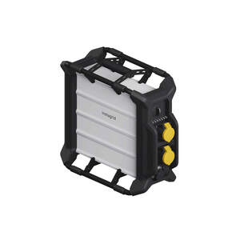
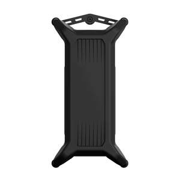
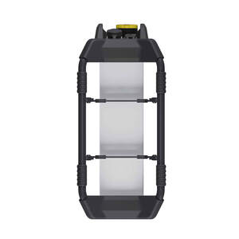
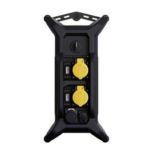
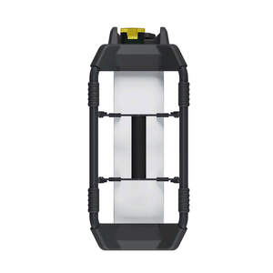
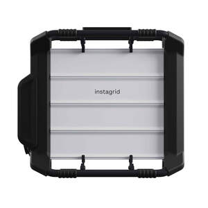

Trade Mark Journal No.2025/047 21 November 2025
UK00004293844 12 November 2025 (7,9,11,35,42)






3 Dimensional
- Class 7
- Current generators; Uninterruptible power supply generating machines; Power supply apparatus[generators]; Electric power supplies [generators].
- Class 9
- Apparatus and instruments for conducting, switching, transforming, accumulating, regulating or controlling electricity; Computer hardware; Computer software; Batteries; Battery boxes; Battery leads; Battery packs; Battery chargers; Battery adapters; Battery terminals; Battery testers; Auxiliary battery packs; Rechargeable batteries; Rechargeable cells; Power units [batteries]; Solar-powered rechargeable batteries; Electric batteries for vehicles, ships and aircraft; Electric batteries for powering electric vehicles; Uninterruptible power supply apparatus [battery]; Power banks; Electric power distribution apparatus; Electric control devices for energy management; Photovoltaic apparatus for converting solar radiation to electrical energy; Industrial controls incorporating software; Solar modules; Photovoltaic solar modules; Portable solar panels for generating electricity; Photovoltaic apparatus and installations for generating solar electricity; Converters, electric; Power conditioning apparatus; Rectifiers; Rectifier modules; Electric power units; Uninterruptible electrical power supplies; AC/DC power supplies; Solar energy collectors for electricity generation; Solar cells for electricity generation; Solar panels for the production of electricity; Wireless communication apparatus; Application software for wireless devices; inverters [electricity]; apparatus and instruments for storing electricity; Power distributors [electrical].
- Class 11
- Lighting apparatus; Solar lamps; Solar cell lighting apparatus; Luminaires; Electric lamps; Lanterns for lighting.
- Class 35
- Retail and wholesale services in relation to current generators, uninterruptible power supply generating machines, power supply apparatus[generators], electric power supplies [generators], apparatus and instruments for conducting, switching, transforming, accumulating, regulating or controlling electricity, computer hardware, computer software, batteries, battery boxes, battery leads, battery packs, battery chargers, battery adapters, battery terminals, battery testers, auxiliary battery packs, rechargeable batteries, rechargeable cells, power units [batteries], solar-powered rechargeable batteries, electric batteries for vehicles, ships and aircraft, electric batteries for powering electric vehicles, uninterruptible power supply apparatus [battery], power banks, electric power distribution apparatus, electric control devices for energy management, photovoltaic apparatus for converting solar radiation to electrical energy, industrial controls incorporating software, solar modules, photovoltaic solar modules, portable solar panels for generating electricity, photovoltaic apparatus and installations for generating solar electricity, converters, electric, power conditioning apparatus, rectifiers, rectifier modules, electric power units, uninterruptible electrical power supplies, ac/dc power supplies, solar energy collectors for electricity generation, solar cells for electricity generation, solar panels for the production of electricity, wireless communication apparatus, application software for wireless devices, inverters [electricity], apparatus and instruments for storing electricity, Power distributors [electrical].
- Class 42
- Scientific and technological services and research and design relating thereto; Industrial analysis and research services; Design and development of computer hardware and computer software; Technological consultancy in the fields of energy production and use; Programming of energy management software; Engineering in relation to energy supply systems; Research in the field of energy; Energy auditing; Consultancy relating to technological services in the field of power and energy supply.
instagrid GmbH
Representative: Abion UK Limited